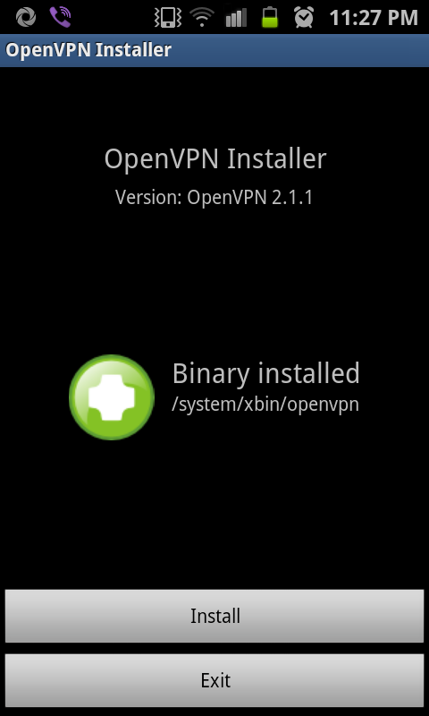
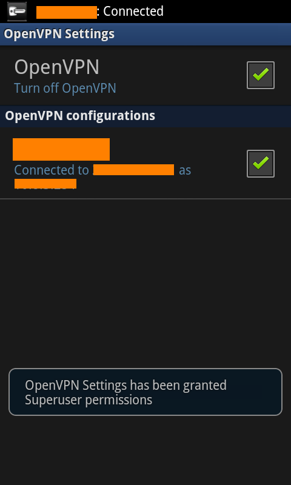

OpenVPN on (Rooted) SGS2
Since mid-last year, I started using a VPN service. Good for me, my VPN provider has both L2TP and OpenVPN services. L2TP is very easy to configure on Android phones (newer ones). But I find it unstable (may be my provider’s problem). So, I prefer OpenVPN as its stable.

I can only switch between L2TP and OpenVPN a limited number of time in a month. My provider do provide a good guide for getting OpenVPN up and running on a rooted android phone. But as we know “NO TWO DROIDS ARE SAME”, I had to improvise to get it all up. I did manage to get VPN up in a sec but requests were not getting routed via VPN.
After all the reading around at regular places, I got this thing working. Here’s how I did it. You would require:
- tun.ko module for your kernel (Optional as SGS2 should have it build in, I am using DXKL3 firmware. Else try tun.ko installer app), if you can not find one and don’t feel like compiling one, STOP HERE else read on.
- Rooted Phone (procedure for SGS2 here)
- BusyBox (SGS2 w/ CF-Root don’t have to do anything, its all burnt in, else use BusyBox Installer)
- VPN Account with OpenVPN service (I guess you have one already else just google it)
- Application: OpenVPN Installer
- Application: OpenVPN Settings
- A PC/Mac with Android SDK (adb tool) and Kies OR Terminal Emulator OR SSHDroid application in the phone
- 30 minutes of time to make all this work.

Once you have rooted your phone, install applications mentioned above as per your preference . Start “OpenVPN Installer” application and click “Install”. Choose “/system/xbin“ location for “openvpn“. For “ifconfig/route“ choose “/system/xbin/bb“ for ifconfig/route.
Now, this is the most tricky part. ifconfig and route commands did not get configured correctly. Then I stumbled on this thread where people were facing exact same issue. Its a huge thread, so just read post #30 and #34 or better, run following commands (in bold) on PC/Mac:
- Remount /system are R/W
1 | adb remount |
- Create a symlink of /system/xbin at /system/xbin/bb
1 | adb ls -s /system/xbin /system/xbin/bb |
- Link toolbox (busybox) as ifconfig and route under /system/xbin/bb
1 | adb shell ln -s /system/bin/toolbox /system/xbin/bb |
- (Optional) Reboot your phone to just make /system R/O
1 | adb reboot |
Puh! congrats you are through with toughest part. Put your OpenVPN configuration files (keys and ovpn file) in /sdcard/openvpn folder. Start OpenVPN Settings, and you should see your configuration listed just under “OpenVPN“ option.
Optional: Long press on your configuration name and choose “Preferences”. Put Google DNS Server “8.8.8.8“ in VPN DNS Server field and check “Use VPN DNS Server“.

All set! Just click on “OpenVPN“ on main screen and then click on your configuration name (might have to click twice). You will see the progress in the status bar and final message is “Connection successful“. If you pull the notification bar down, you should see upload and download speeds.
Just go to any site (ip2location) which tells your ip/location (I go to my VPN provider’s page) and check if all works.
Okay I have just enough time to catch next episode of CSI:Miami on CBS. Bye.
Note: For other Android (2.1+) phones checkout vpnblog